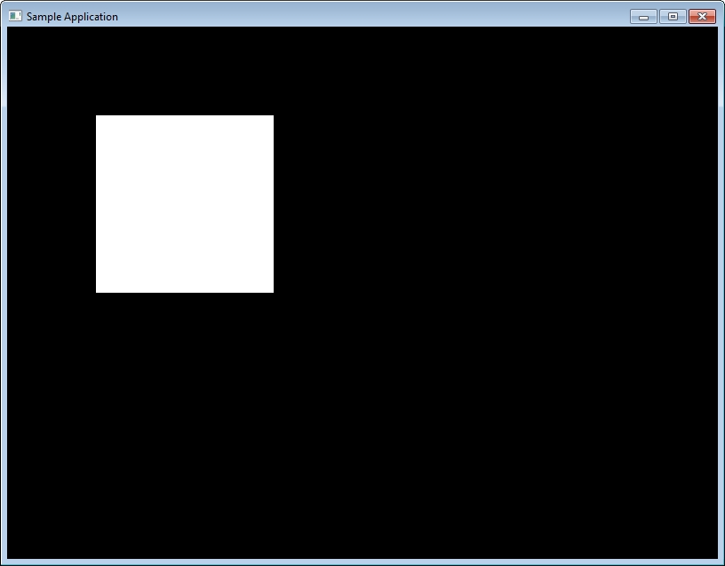

Загрузить исходный код примера на С++, DirectX SDK 6.1, для Visual Studio 2005 можно ЗДЕСЬ.
Приложение демонстрирует DDRAW Hook. Исходный код разрабатывался на Visual Studio 2005 и DirectX 6.1 SDK. В примере можно увидеть, что при помощи свой собственной ddraw.dll полноэкранное приложение DDRAW запускается в окне.
